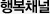
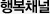

SK는 우리사회의 문제를 해결하기 위해 보다 전문적인 사회공헌활동이 필요하다는 판단하에 관계사별로 각 사의 특성과 노하우를 반영하여 대표 사회공헌 프로그램을 운영하고 있습니다.
-
장학퀴즈 후원을 통한 인재 양성 및 행복나눔계절 구성원 자원봉사 등 자발적인 봉사 활동 문화 정착을 위해 노력하고 있다.
-
에너지복지 지원, 자립형 사회공헌
저소득층과 복지시설 대상 난방비, 연탄 및 단열공사를 지원하고 사회적기업과 자립형 마을기업을 육성, 지원한다.
-
서울 중곡제일시장, 인천 신기시장과 함께 ‘ICT 활용한 전통시장 활성화’ 프로그램과 ‘베이비붐 세대 ICT기반 창업 지원’ 프로그램 운영을 통해 사회문제 해결에 기여하고 새로 운 사회가치를 창출하고 있다.
-
도서산간 지역 청소년들 및 사회복지모금회 등에 스마트 학생복 기증하고, 워커힐 ‘아차산을 사랑하는 모임’을 통해 자연보호 캠페인을 펼치고 있다.

-
노년층의 여가선용과 문화 및 복지향상을 위해 국내 최초 노인전용 극장을 후원하고 있으며 전국 각 사업장에서 생태계 보호를 위해 하천정화 활동인 A.cure <아큐어> 활동을 펼치고 있다

-
’07년부터 직원들이 기부한 금액만큼 회사도 함께 기부하는 매칭펀드를 매월 조성하여, 1사원 1가구 자매결연 활동을 진행하고 있다.
-
아동에서 청소년, 노인에 이르기까지 생애 주기별 IT역량 향상을 위해 인터넷 예절교육, IT특강,사회적 기업가 대상 SNS마케팅 교육, 어르신 스마트폰 활용 교육 등의 활동을 진행하고 있다.
-
이화여대와 함께 미술에 재능이 있는 자폐학생 들을 선발하여 디자이너로 양성, 이들의 미술 작품으로 머그, 텀블러, 도자기등을 제작하고 판매한 수익금을 환원하여 사회,경제활동 참여를 지원하는 E-STAR 프로그램을 운영중이다.
-
저소득층 주거환경 및 복지시설을 개선하는 활동을 매월 실시하며, 모든 임직원이 저소득층 아동/ 청소년과 결연하여 경제적, 정서적 지원을 하고 있고 있다.
-
장애우 한강수상체험과 2박 3일간의 해양캠프를 운영하여 저소득가정 아동 및 장애 청소년들에게 다양한 해양활동을 체험할 수 있는 기회를 제공하고 있다.
-
'청소년 경제교실'을 연중 운영하고 있다. CEO를 포함한 전국 각지의 임직원들이 청소년 경제교실 강사로 활동하며 초·중·고교 학생들의 경제 전반에 대한 이해도를 높이는데 일조하고 있다.
-
발전소 인근 고등학교에 지속적인 장학금 후원 및 아이디어 공모전을 통해 우수인재를 육성/지원하고, 발전소 및 도시가스 자회사 거점지역 내에서 소외계층을 위한 다양한 후원활동을 진행하고 있다.
-
모든 임직원이 저소득층 아동/ 청소년과 결연하여 경제적, 정서적 지원을 하고 있고, 울산/평택기지 인근 산/하천 등지에서 환경정화 활동을 전개하고 있다
-
구성원의 자발적 기부를 바탕으로 지역 소외 아동 기초생활 자립지원을 위한 밑반찬 도시락 및 자립통장지원과 과학예술 재능후원을 위한 ‘로보올림피아드’,‘꿈의 오케스트라’, ‘반도체 교실' 등의 사업을 운영하고있다.
-
청소년 인터넷 중독 예방을 위한 캠프, 상담/멘토링, 대안활동 등 해피인터넷 사업운영 및 지역/소득간 교육격차 개선을 위해 IPTV를 활용한 다양한 나눔 활동을 전개하고 있다.
-
구성원들이 직접 만든 창작물, 기부 받을 물건의 판매/경매하는 재능나눔 바자회를 열어 수익금을 전액 불우이웃에게 전달한다.